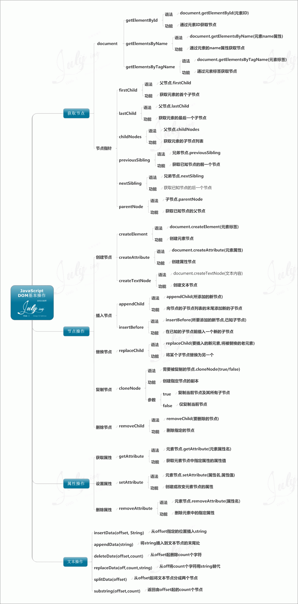
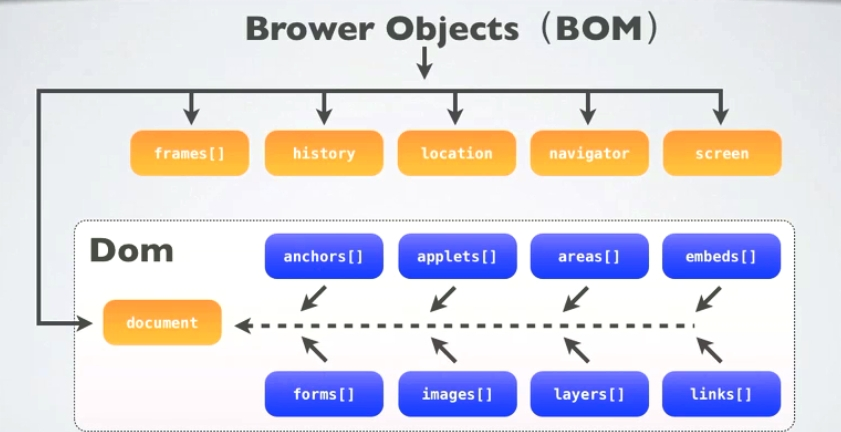
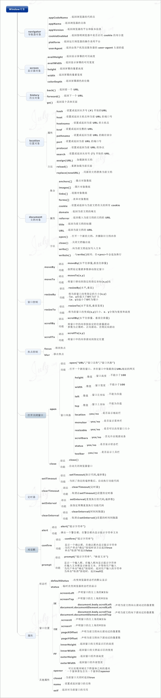

BOM -- Browser Object Model
js组成
我们都知道， javascript 有三部分构成，ECMAScript，DOM和BOM，根据宿主（浏览器）的不同，具体的表现形式也不尽相同，ie和其他的浏览器风格迥异。
- DOM 是 W3C 的标准； [所有浏览器公共遵守的标准]
- BOM 是 各个浏览器厂商根据DOM在各自浏览器上的实现;[表现为不同浏览器定义有差别,实现方式不同]
- window 是 BOM 对象，而非 js 对象；
DOM（文档对象模型）是 HTML 和 XML的应用程序接口（API）。
BOM 主要处理浏览器窗口和框架，不过通常浏览器特定的 JavaScript 扩展都被看做 BOM 的一部分。这些扩展包括：
弹出新的浏览器窗口 移动、关闭浏览器窗口以及调整窗口大小 提供 Web 浏览器详细信息的定位对象 提供用户屏幕分辨率详细信息的屏幕对象 对 cookie 的支持
IE 扩展了 BOM，加入了 ActiveXObject 类，可以通过 JavaScript 实例化 ActiveX 对象 javacsript是通过访问BOM（Browser Object Model）对象来访问、控制、修改客户端(浏览器)，由于BOM的window包含了document，window对象的属性和方法是直接可以使用而且被感知的，因此可以直接使用window对象的document属性，通过document属性就可以访问、检索、修改XHTML文档内容与结构。因为document对象又是DOM（Document Object Model）模型的根节点。可以说，BOM包含了DOM(对象)，浏览器提供出来给予访问的是BOM对象，从BOM对象再访问到DOM对象，从而js可以操作浏览器以及浏览器读取到的文档。其中
BOM包含：window Window对象包含属性：document、location、navigator、screen、history、frames
Document根节点包含子节点：forms、location、anchors、images、links
从window.document已然可以看出，DOM的最根本的对象是BOM的window对象的子对象。
区别：DOM描述了处理网页内容的方法和接口，BOM描述了与浏览器进行交互的方法和接口。


